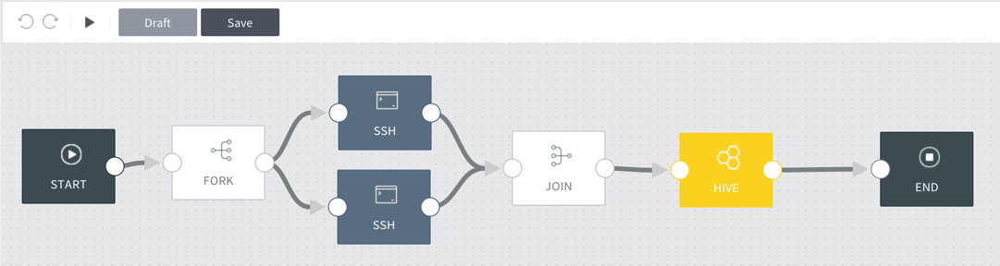

Workflow editor¶
Through the GUI of the workflow editor, you can conveniently edit the selected Hadoop workflow and schedule runs. Click one of the workflows listed in Workflow list to enter the workflow editor. The following is displayed.

Workflow node selection area: Choose nodes to add to the workflow. Click
to expand the panel and view the names of all nodes. The nodes are categorized into two types.
- Action nodes (categorized as “Task” in editor): Define tasks involved in collecting, processing, and ingesting raw data in the Hadoop cluster. See Action nodes for details.
- Control flow nodes (categorized as “General” in editor): Define the start and end of a workflow and determine the flow path of action nodes. See Control flow nodes for details.
Workflow chart canvas: The sequence between added nodes is defined. As shown in the figure below, drag the desired nodes to the canvas, and connect the nodes according to the desired sequence to complete the workflow chart.
Undo or redo actions using the buttons on the top, and click to run the current workflow. And click the Draft button to save the current workflow, and the Save button to save it as the actual workflow.
Workflow settings area: Set up the task details of individual nodes selected in the workflow chart canvas. See relevant node items in Action nodes and Control flow nodes for details.
Workflow run details area: View the run details of the defined workflow.
- Manual run tab: Click on the top left of the editor to view the details of manual runs.
- Scheduled run tab: Schedule workflow runs at desired times using the UI, and view the details of scheduled runs. See Schedule a workflow run for details.
Below is a comprehensive list of topics on using the workflow editor.